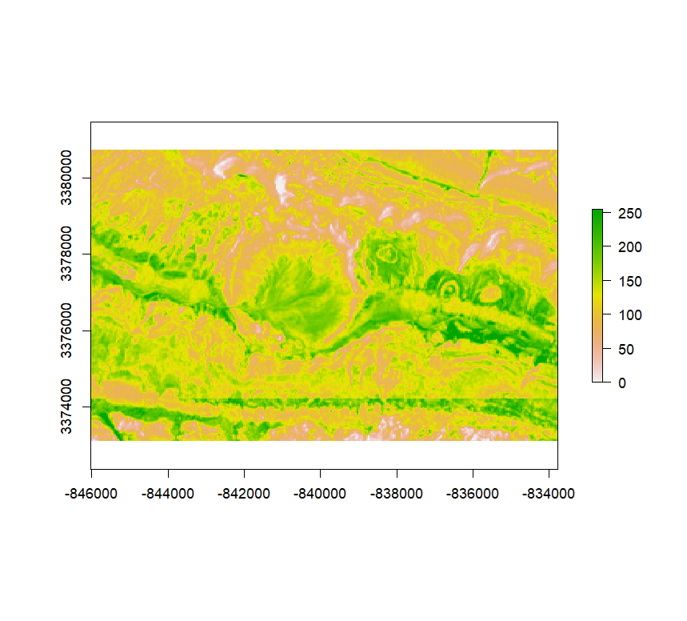

# install.packages('arcgis')
library(terra)
library(raster)
library(arcgis)
library(arcgisbinding)
arc.check_product()Using arcgis with arcgisbinding
Combining the two packages for workflows that span ArcGIS Pro and ArcGIS location services
While both are components of the R-ArcGIS Bridge, arcgis and arcgisbinding serve distinct purposes:
arcgisbridges to ArcGIS location services, enabling web-based workflows from Rarcgisbindingbinds to ArcGIS Pro, enabling data i/o and other desktop software-based processes from R
However, there may be instances where you want to combine the functionality of these two R packages in a single workflow. The below code samples demonstrate how these packages can be used together, as well as alongside popular spatial R packages like terra and sf.
Extract imagery of the Ouarkziz crater
This sample shows how to extract and resample multispectral Landsat imagery from ArcGIS Living Atlas using arcgis and arcgisbinding. Both packages also work with terra, so you can easily plot, write, and integrate with other R-based raster analysis workflows.
product: ArcGIS Pro (13.2.0.49743)
license: Advanced
version: 1.0.1.306 # ArcGIS Living Atlas Landsat2 imagery service URL
rurl <- "https://landsat2.arcgis.com/arcgis/rest/services/Landsat/MS/ImageServer"
# use arcgis to extract the natural color imagery
img_srv <- arc_open(rurl)
img_srv<ImageServer <11 bands, 26 fields>>
Name: Landsat/MS
Description: Multispectral Landsat image service covering the lan
Extent: -20037507.07 20037507.84 -9694091.07 9691188.93 (xmin, xmax, ymin, ymax)
Resolution: 30 x 30
CRS: 3857
Capabilities: Catalog,Image,Metadataimg <- arc_raster(
img_srv,
"-846028", # xmin
"-833783", # xmax
"3373101", # ymin
"3380738", # ymax
)
imgclass : SpatRaster
dimensions : 400, 400, 11 (nrow, ncol, nlyr)
resolution : 30.6125, 30.6125 (x, y)
extent : -846028, -833783, 3370797, 3383042 (xmin, xmax, ymin, ymax)
coord. ref. : WGS 84 / Pseudo-Mercator (EPSG:3857)
source : x_____xTRXJxJ6XbIPSrPxM-nRAvA..x_____x_ags_8564ca38_5048_4d92_ad3e_750f12824416.tif
names : Coast~rosol, Blue, Green, Red, NearInfrared, Short~red_1, ... # use terra to view the imagery
plotRGB(img, stretch = "lin")
# use arcgisbinding to resample and view SWIR
bbox <- c(-846028, # xmin
3373101, # ymin
-833783, # xmax
3380738) # ymax
resampled <- arc.raster(arc.open(rurl), bands=1, nrow=300, ncol=300, resample_type="CubicConvolution", extent=bbox)
swir <- as.raster(resampled)
plot(swir)
# use terra to write out the natural color & SWIR rasters
writeRaster(img, "ouarkziz-crater-RGB.tif", overwrite=TRUE)
writeRaster(swir, "ouarkziz-crater-SWIR.tif", overwrite=TRUE)Data Source: Multispectral Landsat
Use local data to update an ArcGIS Online feature service
Imagine that you are in charge of maintaining a feature service for your organization that needs to be updated on a regular basis. To avoid dealing with tedious and error-prone manual updates, you can use a scheduled R script to make these updates automatically.
In this example, the user maintains an ArcGIS Online feature service containing data representing fatal car accidents in Missouri. Periodically, the user receives data updates in a file geodatabase. The workflow below uses arcgisbinding to read the feature class into R and convert it to an sf object. Then, arcgis uses the sf object to add the new features to the feature service.
library(sf)
library(arcgis)
library(arcgisbinding)
arc.check_product()product: ArcGIS Pro (13.2.0.49743)
license: Advanced
version: 1.0.1.306 # use arcgisbinding to read in feature class
fcpath = "C:\\Data\\FARS_update.gdb\\FARS_2021"
fc <- arc.open(fcpath)
fcdataset_type : FeatureClass
path : C:\Data\FARS_update.gdb\FARS_2021
fields : OBJECTID, Shape, state, statename, st_case,
fields : peds, pernotmvit, ve_total, ve_forms, pvh_invl,
fields : persons, permvit, county, countyname, city,
fields : cityname, month, monthname, day, dayname,
... Truncated ...
extent : xmin=-162.5944, ymin=17.96028, xmax=-65.65091, ymax=66.89788
geometry type : Point
WKT : GEOGCS["GCS_WGS_1984",DATUM["D_WGS_1984",SPHEROID["WGS_1984"...
WKID : 4326 # use arcgisbinding to filter data to Missouri and convert to sf
sqlquery <- "STATENAME = 'Missouri'"
fcdata <- arc.select(fc, where_clause=sqlquery)
sfdata <- arc.data2sf(fcdata) # project to 3857
# use arcgis to set token
token <- auth_binding()
set_arc_token(token)In this case, the token is set using the active portal in ArcGIS Pro (via {arcgisbinding}). Note that other authorization methods could be used here, such as auth_code() or auth_user().
# use arcgis to access feature service
fsurl <- "https://services1.arcgis.com/hLJbHVT9ZrDIzK0I/arcgis/rest/services/Fatal_Vehicle_Accidents_in_Missouri/FeatureServer/0"
flyr <- arc_open(fsurl)
flyr<FeatureLayer>
Name: Missouri_Fatal_Accidents
Geometry Type: esriGeometryPoint
CRS: 3857
Capabilities: QueryAccess to this feature service is restricted (i.e., it is not shared to “Everyone” in ArcGIS Online). Because the user that requested the token does have access to read and modify this feature service, they are able to access the feature service and its metadata, as well as make changes to the data. Learn more about how access to items is managed in ArcGIS Online here.
# use sf to project new data to the same crs as flyr
sfdataprj <- st_transform(sfdata, st_crs(flyr))
# use arcgis to add the new features
add_res <- add_features(flyr, sfdataprj)
tail(add_res) objectId uniqueId globalId success
926 9287 9287 NA TRUE
927 9288 9288 NA TRUE
928 9289 9289 NA TRUE
929 9290 9290 NA TRUE
930 9291 9291 NA TRUE
931 9292 9292 NA TRUEThe result of the add_features() function provides fine-grained information about the success (or failure) of the feature additions. Here, all 931 new features were successfully added to the feature service. If you were running this process as an automated script, you may want to capture and log any features that failed.